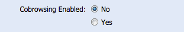

Deployment Guide¶
Overview¶
The Live Expert platform includes support for allowing agents to co-browse web content in realtime with their customers. This is a powerful feature within the LE Collaborate module, but care must be taken to ensure that the Live Expert system and the website hosting the Anywhere module are setup and configured properly to support this feature.
What is Co-Browsing?¶
A co-browsing session allows the Live Expert agent to join the customer’s web browsing session. In this manner the agent is able to see and interact with the same page that the customer is actively viewing. The agent and customer have independent mouse and keyboard controls, with the pointer and cursor for the remote party being displayed on-screen. A co-browsing session can be started and stopped from the Studio’s “Customer Browser” tab.
LE Enterprise Setup¶
The co-browsing functionality is part of the LE Collaborate module. This module requires a separate license to be purchased in addition to the standard LE Studio licenses. Before enabling the co-browsing feature for your account, please contact your Live Expert support representative to notify us that you intend to use the co-browsing feature and to confirm that you have the appropriate licenses to cover this.
Enabling Co-Browsing¶
To enable co-browsing for your company, take the following steps:
- Log into the LE Enterprise as an admin user
- Navigate to the Company tab
- On the resulting form, find the “Cobrowsing Enabled” field
- Select the “Yes” radio option
- Click the Save button at the bottom of the form
Any active agents will need to restart the Studio in order for this change to take affect. Once this is completed, agents will now find that the co-browsing icon in the “Customer Browser” tab’s toolbar is enabled when the customer’s browser supports running a co-browsing session.
LE Anywhere Setup¶
In addition to the controls exposed via the LE Enterprise, you are also able to control the pages within your site on which this feature will be enabled. This is done through a configuration setting exposed in the LE Widget JavaScript API.
We strongly recommend deploying this feature consistently to all pages within a site so that as the customer navigates the agent is consistently able to maintain their connection to this session. If the customer navigates to a page that does not have the co-browse library enabled, the agent will stop seeing updates from the customer and after a short time the session will be terminated.
Deploying along with the LE Widget¶
The co-browse library is included within the LE Widget script. This significantly simplifies the process of deploying this feature on pages that already contain the LE Widget. To do so, you will need to add the enableCobrowsing setting to your existing configurations, setting the value to true. This will result in a LE Widget deployment like the following:
<script src="//assets.liveexpert.net/widget/javascript/leaWidget.js"></script>
<script>
var config = {
enterpriseURL: 'liveexpert.net',
sourceHost: 'assets.liveexpert.net',
assetLocation: 'company-alias',
companyID: 123,
categoryID: 456,
language: ‘EN’,
enableCobrowsing: true
};
liveexpert.LEAWidget.init(config);
</script>
Deploying without the LE Widget¶
The co-browse feature can also be deployed to pages that you do not wish to expose the widget on. To do so, you will need to deploy the following set of script tags onto such pages:
<script src="//assets.liveexpert.net/widget/javascript/leaWidget.js"></script>
<script>
var config = {
enterpriseURL: 'liveexpert.net',
enableWidget: false,
enableCobrowsing: true
};
liveexpert.LEAWidget.init(config);
</script>
By setting the enableWidget configuration to false, the LE Widget will not be shown on or deployed to the current page.
Co-Browse Capability Configurations¶
When deploying the co-browse library to a site there are two types of restrictions that can be enforced on the agent:
- Prevent viewing an element
- Prevent editing an element
In this way you are able to control the capabilities exposed to the agent as they interact with the customers page and maintain security on the customer’s behalf.
Viewing Restriction¶
To prevent an agent from being able to see the content that a customer enters into an element on the page add the following attribute:
<input type=“text” unbluCapturingHint=“block”/>
This is currently only compatible with text and text area elements. Any content entered by the customer will be replaced with a placeholder character when displaying the corresponding field on the agent’s screen.
Editing Restriction¶
To prevent an agent from being able to modify the contents of fields within an element on the page add the following attribute:
<div unbluEditingHint=“block”>...blocked content…</div>
This attribute can be added to any element on the page and will result in editing being prevented on all input fields contained within this element. This can be used independently of the viewing restriction to allow the agent to review the content being entered by the customer without being able to enter it themselves.
Additional Considerations¶
Limitations¶
It is important to be mindful of the following considerations and limitations when deploying the co-browse feature:
Certain site structures are not supported¶
Our co-browsing implementation watches the structure of the customer’s page and updates the agent’s version of this page to match. In light of this there are certain HTML structures and practices that are not observable by this logic and therefore cannot be reproduced for the agent. In particular CSS pseudo-classes, such as the hover or active modifiers, are one such structure that is not supported. Client side applications such as Flash or video elements are not shared between the client and the agent.
Sessions are not currently supported across all browsers¶
Our co-browsing implementation is able to run without requiring a plugin by leveraging various features that are built directly into the customers browser. This presents challenges and compatibility issues for older browsers, such as IE 8 and 9. We recommend customers use the latest version of Chrome, Firefox, or Internet Explorer to conduct a co-browse session.
Similarly, for Safari the default configuration is set to block all third-party cookies. The ability to relay any page changes from the customer to the agent’s browser session depends on the ability to set and maintain a single third-party cookie. We are actively working on a work-around for this, but in the meantime we are unable to support sessions with customers running the Safari browser.